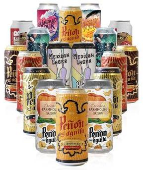
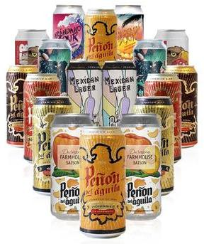

Fotos
Inspirada en las Catharina Sours del sur de Brasil, esta cerveza se caracteriza por su refrescante acidez y el sabor de la fruta. De cuerpo ligero, bajo amargor y contenido alcohólico moderado, es una cerveza de extrema tomabilidad. La acidez generada por lactobacilus es elegante y delicada y encuentra balance en el dulzor de la fruta. Una cerveza para disfrutar con carnes blancas, ensaladas y postres a base de chocolate o fruta. e ideal para combinar quesos fuertes, platos livianos y postres a base de frutos rojos.

 

Inspirada en las Catharina Sours del sur de Brasil, esta cerveza se caracteriza por su refrescante acidez y el sabor de la fruta. De cuerpo ligero, bajo amargor y contenido alcohólico moderado, es una cerveza de extrema tomabilidad. La acidez generada por lactobacilus es elegante y delicada y encuentra balance en el dulzor de la fruta. Una cerveza para disfrutar con carnes blancas, ensaladas y postres a base de chocolate o fruta. e ideal para combinar quesos fuertes, platos livianos y postres a base de frutos rojos.